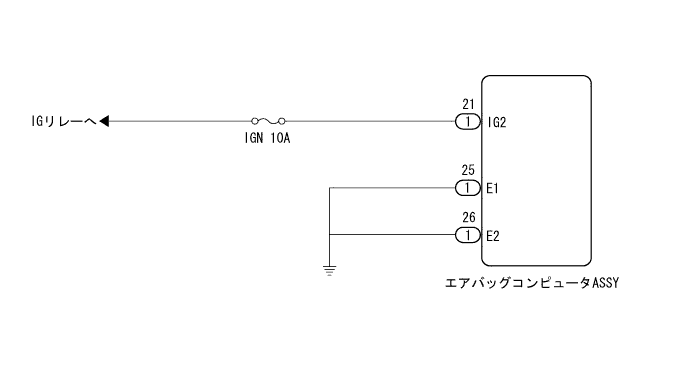
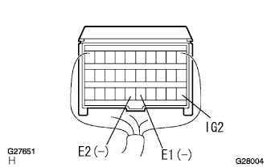

SRS Airbag System Low Power Source Voltage |
| DTC No. | DTC Detection Item |
|---|---|
| None | Low power source voltage |

| Step 1 | Preparation for Inspection (Airbag Sensor Related) |
Disconnect the battery negative terminal and wait for 90 seconds.
Disconnect the connectors from the airbag computer assembly. (see)
Disconnect the connectors from the front airbag sensors RH and LH. (see)
Disconnect the connectors from the side airbag sensor assemblies RH and LH. (see)
Disconnect the connectors from the airbag sensors rear right and left. (see)
| NEXT | |
| Step 2 | Preparation for Inspection (Inflator Related) |
Disconnect the connector from the horn button assembly. (see)
Disconnect the connector from the instrument panel passenger airbag assembly. (see)
Disconnect the connector from instrument panel lower airbag No.1. (see)
Disconnect the connectors from the front seat outer belt assemblies RH and LH (pretensioners). (see)
Disconnect the connector from the front seat assembly RH. (see)
Disconnect the connectors from the curtain shield airbags RH and LH. (see)
| NEXT | |
| Step 3 | Inspect Power Source Voltage |
 |
Connect the cable to the negative (-) battery terminal and turn the ignition switch ON.
Using SST (Toyota electrical tester), measure the voltage between the terminals of the airbag computer assembly connector.
| Tester Connection | Condition | Standard |
|---|---|---|
| 1-21(IG2) - 1-25(E1) | IG ON | 11 to 14V |
| 1-21(IG2) - 1-26(E2) | IG ON | 11 to 14V |
|
| ||||
| OK | |
| Step 4 | Airbag Warning Light Inspection |
Turn IG OFF.
Disconnect the battery negative terminal and wait for 90 seconds.
Connect the connector to the horn button assembly.
Connect the connector to the instrument panel passenger airbag assembly.
Connect the connector to instrument panel lower airbag No.1.
Connect the connectors to the front seat outer belt assemblies RH and LH (pretensioners).
Connect the connectors to the front seat airbag assemblies RH and LH.
Connect the connectors to the curtain shield airbags RH and LH.
Connect the connector to the airbag computer assembly.
Connect the connectors to the front airbag sensors RH and LH.
Connect the connectors to the side airbag sensor assemblies RH and LH.
Connect the connectors to the airbag sensors rear right and left.
Connect the battery negative terminal, turn IG ON and wait for 60 seconds.
Operate the electrical systems (defogger, wipers, headlights, heater blower, etc.) and check the airbag warning light.
|
| ||||
| OK | |
| Step 5 | Inspect Airbag Computer Assembly |
Using SST (TaSCAN), check the DTCs. (see)
|
| ||||
| OK | ||
| ||